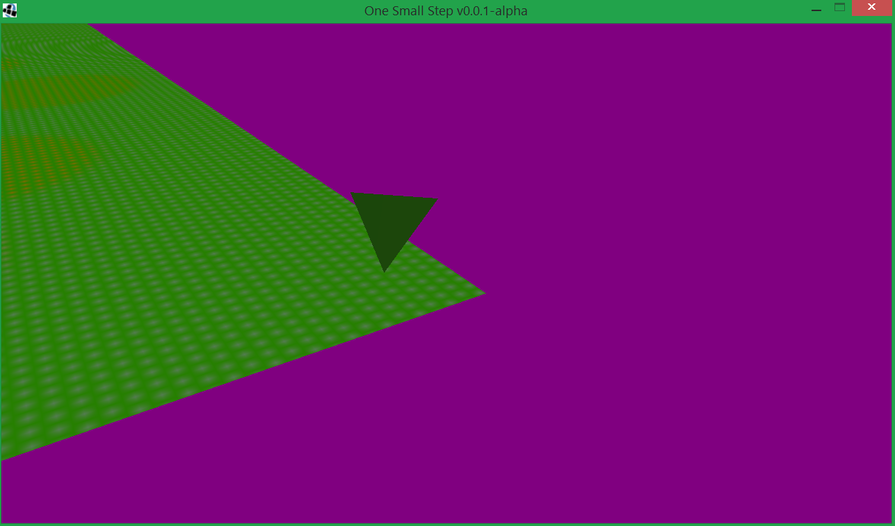

Devlog
April 2, 2021
Today I decided to set up this site finally to make sharing the game a bit easier. I'm now working on packaging a JVM up with the game so that I don't have to worry
about any annoying runtime issues. Well, less of them...
Update: I don't have the faintest idea how Java packaging works, this may take a bit...
April 3, 2021
I spent a large part of my day struggling, struggling, hitting my head against as many brick walls I could find, then finally deciding to use
OpenJDKPortable.
I also found something called launch4j, which proved to be really nifty once I figured out how to use it. It appears my setup works now, so the real fun can begin!
April 5, 2021
I finally fixed the lighting issue with the terrain, turns out everything worked as expected but I had my light source set at a Y level of 0, so it was inside the ground...
As far as bigger things go, I played around with 3rd person cameras and managed to get a crude one working that can follow any entity in the game world. I'm looking into adding actual rotation
on first person cameras too.
No guarantees, but I might get off on a tangent messing with terrain heightmap generation...
I do also plan on adding a proper control scheme, currently my setup is a cheat in that it has two keys bound to do the same thing.
I ended up getting distracted working on making plain coloured models that I could generate the colour of at launch time, and it took a lot longer than expected.
April 6, 2021
I got the moveable camera working with rotation now, simple right click drag.
I'll probably work on terrain generation next.
April 10, 2021
So I spent a few days pondering and researching...
I got a crude ish Perlin noise working, with some basic settings that I'll be adding to eventually. I'll try not to get distracted with that stuff just yet...
In other news, I also finally came up with a potential title idea that actually seems viable.
"One Small Step", a reference to the moon landing quote from Armstrong, seemed to fit the general nature of the game.
At one point early on when I made the initial heightmap set up, I made some crude trees:
I ended up playing around with some various settings until I found something closer to what I imagined. I added a minimum and maximum height value as well to make things
feel a little less crazy too.
June 7, 2021
Oops. It appears I haven't updated here in a while, but I promise I have been hard at work...
I spent a few weeks researching a terrain generation technique called "Marching Cubes", and it bent the holy hell out of my brain.
After about 20 hours of coding it, I finally did get something to appear, and I never thought I would be so irrationally happy to see a triangle come up on a screen.
Behold the glory:

I still have a lot of work to do to actually get this running at an acceptable level for a game, but I'm very happy to have gotten this far. I'll hopefully push a release out soon including this marching cubes business.
June 11, 2021
I whacked away at getting the marching cubes process working a little better. In the process of testing, I actually discovered I had introduced some horrible bugs, and spent a while finding some appropriate solutions to them. I'm still not fully happy with them yet.
Once I get the normals working and the lighting doesn't look completely terrible, I'll post some screenshots.